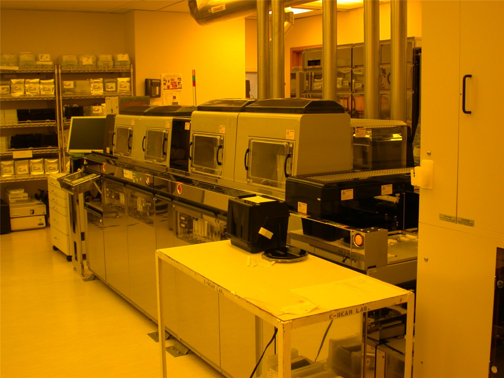

[단독] 반도체 ‘물 부족’ 대책 있나… 호남 농업용 저수지서 끌어올 판
대규모 반도체 단지의 용수 확보가 과제로 떠오르면서, 호남의 농업용 저수지 물을 끌어오는 방안까지 검토되는 것으로 전해졌다. 산업용수와 농업용수의 배분을 둘러싼 갈등 가능성도 제기된다.
유선경 기자 · 2026.06.27
橋한국

반도체 산업의 물 부족 대책과 관련해 호남의 농업용 저수지에서 용수를 끌어오는 방안이 거론된다고 조선일보가 단독 보도했다. 첨단 반도체 공정은 막대한 양의 초순수(超純水)를 필요로 한다.
광고 문의 · 300×250반도체 생산은 웨이퍼 세정 등에 대량의 물을 쓰기 때문에, 단지 규모가 커질수록 안정적 용수 확보가 핵심 인프라 과제가 된다. 전력·용수·도로 같은 기반시설이 뒷받침되지 않으면 투자 효과도 반감된다.
다만 농업용 저수지의 물을 산업용으로 돌리는 방안은 지역 농가와의 이해 조정이 필요하다. 가뭄이 겹치는 시기에는 용수 배분이 민감한 사회적 쟁점이 될 수 있다.
정부와 지자체는 신규 취수원 개발, 재이용수 확대, 광역 상수도 연계 등 여러 대안을 함께 검토해야 하는 상황이다. 단일 해법보다 다층적 대비가 요구된다.
華橋時報는 산업 정책을 ‘성장’의 구호로만 다루지 않는다. 반도체 투자의 이면에 놓인 용수·전력 같은 기반 과제와 지역사회의 이해까지 균형 있게 전한다.